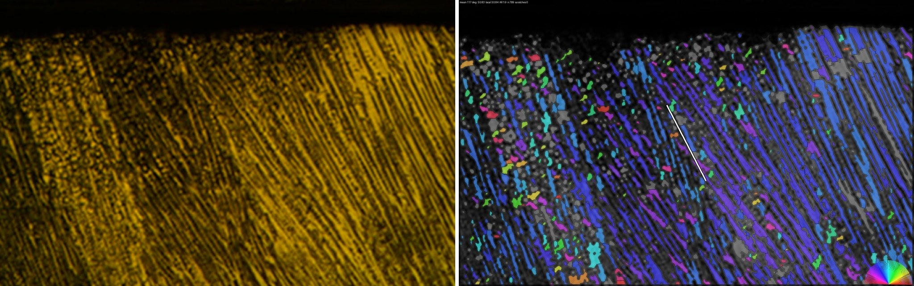
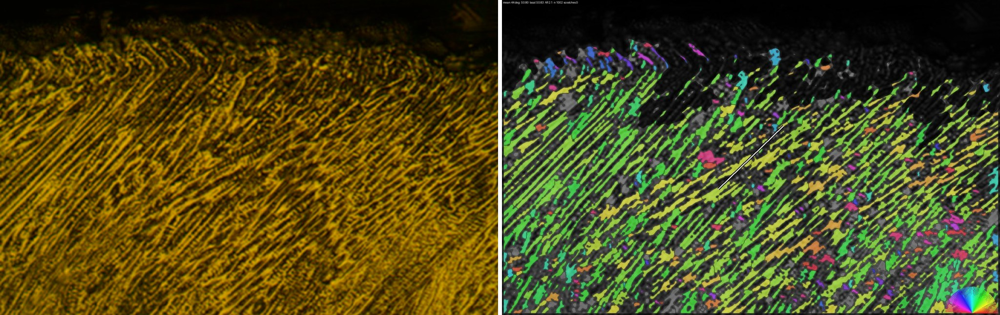
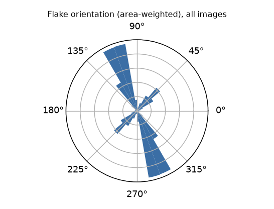
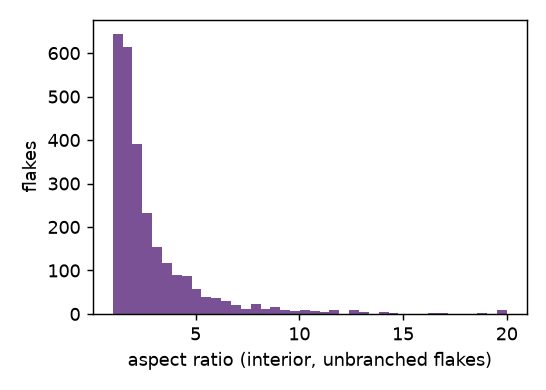

3 images; reading: phase (minority phase is separate blobs about as thick as the matrix); flake width 4.47 px; code version 77a86cd85c.
Confidence
Within tolerances on held-out twin images, and consistent under rotation on the real images.
Twin accuracy (held-out twin images, exact truth): worst family ratio 0.97, pooled 0.81 (<= 1 means within the tolerances of config.yaml); dev 0.86: a gap shows how much the search fitted the dev twin images.
The twin resembles the real images (worst profile mismatch x1.14; flake aspect ratio and width as measured by the method differ by up to x1.05); the twin accuracy carries over only as far as that, and only for structures the generator draws (straight laths in colonies).
Rotation check on the real images (central disk turned by 30 deg and measured again): worst ratio 0.39 (passes); S changes by 0.012, the direction by 0.29 deg, the median aspect ratio by 1.6 %; for comparison, the 95 % interval of S from the finite number of flakes is +/-0.027.
Flakes are only ~4.5 px wide (the profiler over-reads small widths by ~1 px): the images were analysed at 3x size. Near and below ~4-5 px the boundaries are at the resolution limit: orientation and S hold best, aspect ratios and lengths least. Use higher-resolution images if you can.
The settings tuned on the twin were not used: on the real images they gave a worse rotation check (flakes used 749 vs 789, rotation check 1.36 vs 0.38666666666666666 with the start settings), so the start settings were kept: the twin did not capture what made the difference.
Lengths are in pixels (no --um-per-px given).
Set summary
median
min
max
order parameter S
0.827
0.799
0.928
local S (within colonies)
0.843
0.828
0.943
mean misalignment (deg)
11.9
7.13
13.8
median aspect ratio
2.07
1.86
2.5
median length (px)
10.5
9
14.4
median width (px)
4.7
4.5
5.45
flakes used per image
789
560
1e+03
Mean directions differ per image (axial; see the table): a set-level mean direction is only meaningful when the images were taken in the same specimen frame.
Per image
image
mean dir (deg)
S [95 % CI]
local S
misalignment (deg)
AR [95 % CI]
flakes
scratches
L09__10.3390_ma16020804_g005_p3
109
0.928 [0.907, 0.947]
0.943
7.13
2.5 [2.25, 2.71]
560
0
L12__10.3390_ma16020804_g002_p3
117
0.827 [0.791, 0.859]
0.843
11.9
1.86 [1.78, 1.93]
789
0
L13__10.3390_ma16020804_g002_p9
44.2
0.799 [0.773, 0.826]
0.828
13.8
2.07 [1.97, 2.14]
1002
0
How accurate is it (twin images with exact truth)
Twin: 18 code-generated images fitted to this set (realism ok: True; worst profile mismatch x1.14).
twin images
params
mean direction err (deg)
S err
misalignment err (deg)
AR err
flake orientation err (deg)
flakes found
worst family ratio
dev
start
0.826
0.0121
1.07
0.125
2.22
0.979
0.856
holdout
start
0.291
0.0112
0.404
0.121
2.12
0.983
0.975
dev
chosen
0.826
0.0121
1.07
0.125
2.22
0.979
0.856
holdout
chosen
0.291
0.0112
0.404
0.121
2.12
0.983
0.975
Search: 20 new configurations evaluated (34 incl. cached); objective 1.064 at the start, 1.064 chosen.
Central disk measured as is and turned by 30 deg: direction off by 0.29 deg, S by 0.012, aspect ratio by 0.016 (relative) (worst ratio to tolerance 0.39; <= 1 passes). Necessary, not sufficient.
Drawings (left: original, right: flakes coloured by orientation; grey = not used)
review/L09__10.3390_ma16020804_g005_p3.jpg

review/L12__10.3390_ma16020804_g002_p3.jpg

review/L13__10.3390_ma16020804_g002_p9.jpg

rose.png

aspect_ratio.png
Files
`flakes.csv`: every flake (orientation, length, width, aspect ratio, misalignment, flags)
`image_summaries.csv`: one row per image, with bootstrap intervals